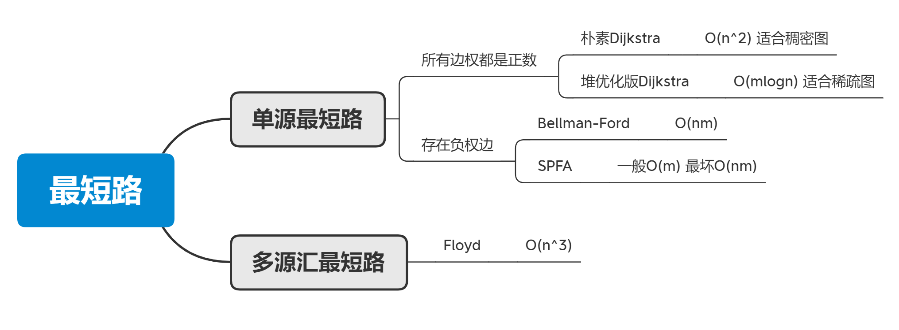

Dijkstra (朴素版和堆优化)
1. 最短路算法汇总
思维导图

稠密图和稀疏图的判断
m ~ n^2 为稠密图
m ~ n 为稀疏图
2 Dijkstra
2.1 朴素Dijkstra
849. Dijkstra求最短路 I - AcWing题库
针对稠密图，使用邻接矩阵
时间复杂度 O( n2 )
1 | |
踩过的坑：
Dijkstra中的 n 次循环，用于计数，因为每次循环可以确定一个点的最短路，所以需要循环n次
进入循环后，首先找到
没有确定最短距离的点中dist值最小的点，即：1
2
3
4t = -1;
for (int j = 1; j <= n; j++)
if (!st[j] && (t == -1 || dist[j] < dist[t]))
t = j;将这个点 t 确定为距离最短的点后，利用这个点更新其它点的距离
1
2
3
4st[t] = true;
for(int j = 1; j <= n; j++)
dist[j]=min(dist[j],dist[t]+g[t][j]);注意Dijkstra的初始化条件
- 将
dist数组初始化为 0x3f3f3f3f - 从 1号 点开始拓展，就将
dist[1]初始化为 0
- 将
遍历邻接表时，循环条件
for (int j = 1; j <= n; j++)- 因为在图的存储时，已经包含了节点标号，节点标号从1开始
2.2 堆优化版Dijkstra
850. Dijkstra求最短路 II - AcWing题库
堆可以使用 手写堆 mlogn 或者 优先队列 mlogm
一般不需要手写堆
代码：
1 | |
需要注意的点：
小根堆的定义方式：
priority_queue<PII, vector<PII>, greater<PII>> heap;- 第二个参数
vector<PII>表示优先队列使用vector容器实现 - 第三个参数
greater<PII>越小越优秀👍
- 第二个参数
堆优化版Dijkstra 的循环不同于朴素版
在朴素版Dijkstra中，由于每次循环可以确定一个最短距离的点，所以
n次循环就能确定n个点的最短距离在堆优化版的Dijkstra中，由于
heap中存在冗余所以需要一直循环到heap为空为什么存在冗余?
假设1->2有权重为2和3的边，在遍历到点1的时候2号点的距离会更新两次放入堆中
为什么循环到为空就可以避免冗余的影响？
因为每次弹出的都是堆中的最小元素，所以较小的边会先于较大的边弹出，并使对应的
st[]=true，在弹出这条边的较大值时，由于st[]已经为true，所以直接continue
本博客所有文章除特别声明外，均采用 CC BY-SA 4.0 协议 ，转载请注明出处！